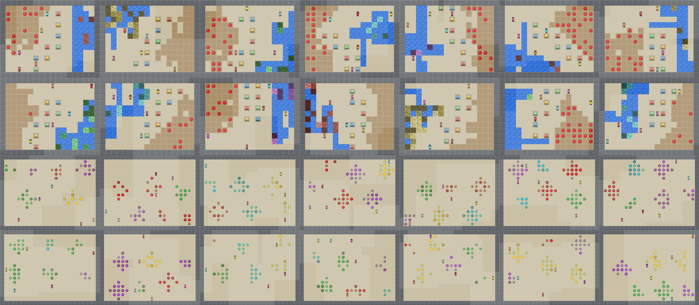
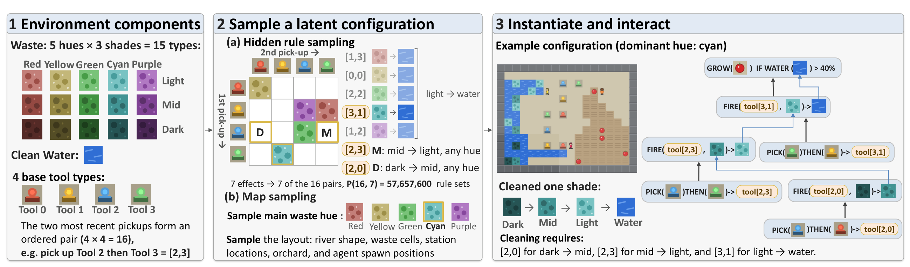

Abstract
Sequential social dilemma benchmarks capture diverse social interactions, but rarely test whether agents can infer hidden environmental rules through repeated interaction while adapting to other agents. We introduce OpenSocialJax, a benchmark in which agents must discover how the world works while a social dilemma is in force. It is built on Clean Up and Commons Harvest, and draws every episode from an open-ended distribution of latent configurations that vary the spatial layout and the hidden rules for tool crafting, payoffs, and resource dynamics. Each episode samples one configuration from tens of millions of possibilities and holds it fixed across five trials. We evaluate eight large language models, including three closed source models and five open source models. Our evaluation tests whether models can discover hidden rules and adapt to other agents in homogeneous and mixed teams. We find that rule discovery often improves performance but does not reliably sustain cooperation, as the cleaning burden becomes concentrated among fewer agents in OpenCleanup and every team eventually exhausts the shared resource in OpenHarvest. In our mixed arena, one cooperative agent was able to sustain the public good in OpenCleanup at a cost to its own return, but could not prevent resource depletion in OpenHarvest. Together, these results highlight the difficulty of adapting jointly to unfamiliar environmental dynamics and the changing behavior of other agents.
Environments
OpenSocialJax has two environments, both written in JAX. Each one takes a classic sequential social dilemma and adds a latent configuration: a map and a set of hidden rules, sampled once per meta-episode from held-out splits. A meta-episode is five trials on the same configuration. The world is laid out again at the start of every trial, and the agents keep what they learned. Rewards are individual.

OpenCleanup
OpenCleanup is Clean Up with a crafting rule. The river carries waste of one hue in three shades, and cleaning it takes a chain of three working tools: one turns dark waste into mid, one turns mid into light, and one turns light into clean water. A working tool is an ordered pair of pick-ups from four base-tool stations. Which of the 16 ordered pairs makes which tool is hidden, and is one of 57,657,600 rule sets. Apples grow only while the river is clean enough, so cleaning is a public good that some agents must provide, while every apple pays only the agent that eats it.

OpenHarvest
OpenHarvest is Commons Harvest with ripeness. An apple is unripe, then ripe, then over-ripe, and then it rots. For every colour, two things are hidden: how many points an apple pays at each stage (1, 0.5 and 0.25 in some order), and how fast its cell regrows after being harvested at each stage (×2, ×1 and ×0.5 in some order). This gives 60,466,176 rule sets. A cell regrows only while apples still hang near it, so restraint keeps a common pool alive that any single agent can deplete. An agent can also zap another one, which sends it back to the spawn row and disables it for 12 steps.

One model cleans, the others eat
What happens when five different models share one world? In the mixed arena, Claude Opus 5.5, gpt-6-sol, GLM-5.3-Flash, DeepSeek V4.1 Flash and Qwen3.8-27B play together, one seat each, on the same three hidden configurations that the single-model teams played. No agent is told which model the others are.
OpenCleanup
Claude Opus 5.5 took over the river. It did three quarters of all the cleaning, and that kept apples growing for the whole team. It also ate fewer apples than three of the four models it was cleaning for. gpt-6-sol cleaned a quarter as much as Claude and ate two and a half times as many apples.
For the other models the mixed team is a better place than their own. gpt-6-sol eats three times as many apples as it does among copies of itself, Qwen3.8-27B four times, DeepSeek V4.1 Flash seven times. In their own teams the river is rarely clean enough for long; here someone else keeps it clean.
OpenHarvest
In OpenHarvest one careful agent cannot protect the orchard, because any other agent can eat what it leaves. The mixed team ate the orchard bare in all 15 trials, between step 53 and step 111 of 300. Claude Opus 5.5 earns 67.5 points per agent in a team of its own copies and 51.3 here, and the five models finish within 8 points of each other.
Replays
The two replays below are full meta-episodes from the paper's homogeneous setting: five copies of Claude Opus 5.5 play five trials on one hidden configuration. The video shows one frame per step, drawn as the world was when the agents decided. The panel next to it shows what every agent wrote at that step: its action, its reasoning, its goal, the notes it keeps, and the facts the harness has recorded for it.
OpenCleanup · Claude Opus 5.5
5 agents, 5 trials of 400 steps. The score of a trial is the number of apples the team ate. A yellow overlay marks the cells an agent fires at.
OpenHarvest · Claude Opus 5.5
5 agents, 5 trials of up to 300 steps. The score of a trial is the team's points. A trial's replay ends when the last apple is gone, because nothing can regrow after that and the remaining steps were skipped in the run. A yellow overlay marks the cells an agent zaps.
BibTeX
@article{guo2026opensocialjax,
title = {OpenSocialJax: Evaluating Social Adaptation in Sequential Social Dilemmas
with Open-Ended Environmental Dynamics},
author = {Guo, Zihao and Fang, Meng and Leibo, Joel Z. and Du, Yali},
journal = {arXiv preprint arXiv:2610.13710},
year = {2026}
}